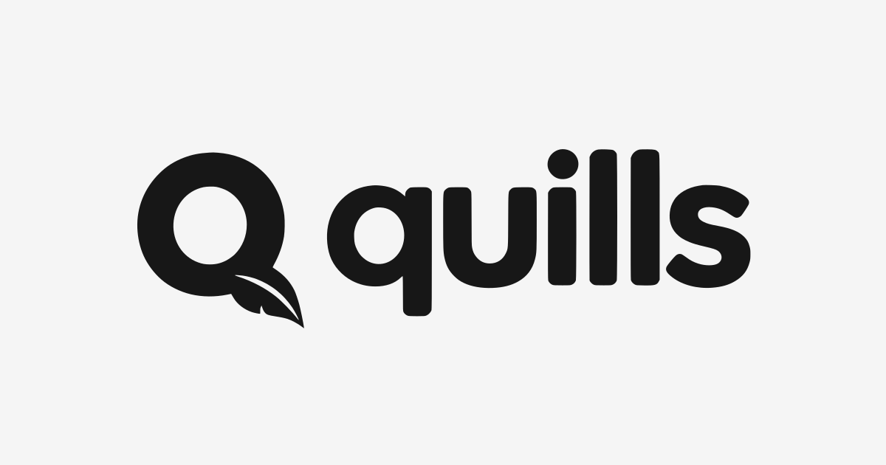

<!doctype html><html lang="en"><meta charset="utf-8"><meta name="viewport" content="width=device-width, initial-scale=1"><title>quills brand assets</title><style>
  *{box-sizing:border-box}body{margin:0;background:#e8e8e8;color:#171717;font:16px/1.5 system-ui,sans-serif}main{max-width:1100px;margin:auto;padding:40px 24px}h1{margin:0 0 8px;font-size:32px}p{margin:0 0 24px}.grid{display:grid;grid-template-columns:1fr 1fr;gap:20px}.panel{padding:28px;border-radius:16px;background:#f5f5f5}.dark{background:#171717;color:#f5f5f5}h2{font-size:14px;font-weight:500;margin:0 0 24px;opacity:.7}.logo{width:100%;height:120px;object-fit:contain}.marks{display:flex;align-items:center;gap:24px;margin-top:24px}.mark{width:100px;height:100px}.icons{display:flex;align-items:center;flex-wrap:wrap;gap:24px}figure{margin:0;text-align:center}figcaption{font-size:12px;margin-top:8px;opacity:.65}.install{width:96px;height:96px;border-radius:20px}.mask{clip-path:circle(40%);width:96px;height:96px}.wide{grid-column:1/-1}.social{display:block;width:100%;height:auto}@media(max-width:650px){.grid{grid-template-columns:1fr}.wide{grid-column:auto}.logo{height:80px}}
  </style><main><h1>quills</h1><p>Logo, favicon, app and email assets</p><div class="grid">
  <section class="panel"><h2>Light interface</h2><div class="marks"></div></section>
  <section class="panel dark"><h2>Dark interface</h2><div class="marks"></div></section>
  <section class="panel wide"><h2>Favicons at actual size</h2><div class="icons"><figure><figcaption>16 px</figcaption></figure><figure><figcaption>32 px</figcaption></figure><figure><figcaption>48 px</figcaption></figure><figure><figcaption>96 px</figcaption></figure></div></section>
  <section class="panel wide"><h2>Install, email and masked app icons</h2><div class="icons"><figure><figcaption>Apple touch</figcaption></figure><figure><figcaption>Web app</figcaption></figure><figure><figcaption>Email</figcaption></figure><figure><figcaption>Safe circle</figcaption></figure></div></section>
  <section class="panel wide"><h2>Social preview · 1200 × 630</h2></section>
  </div></main></html>
